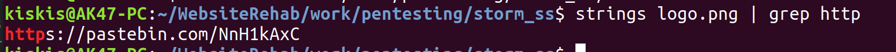
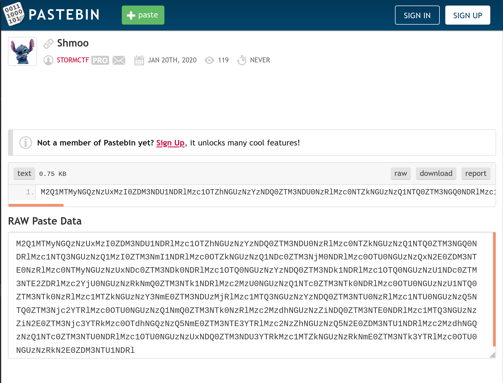
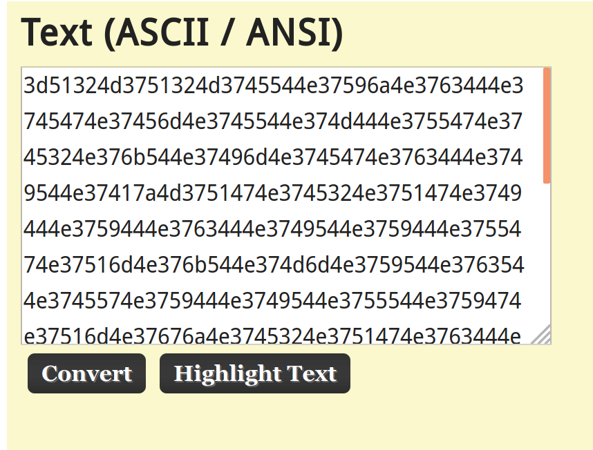
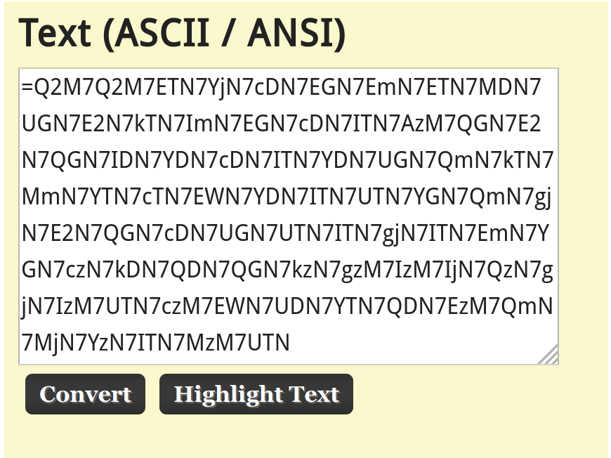
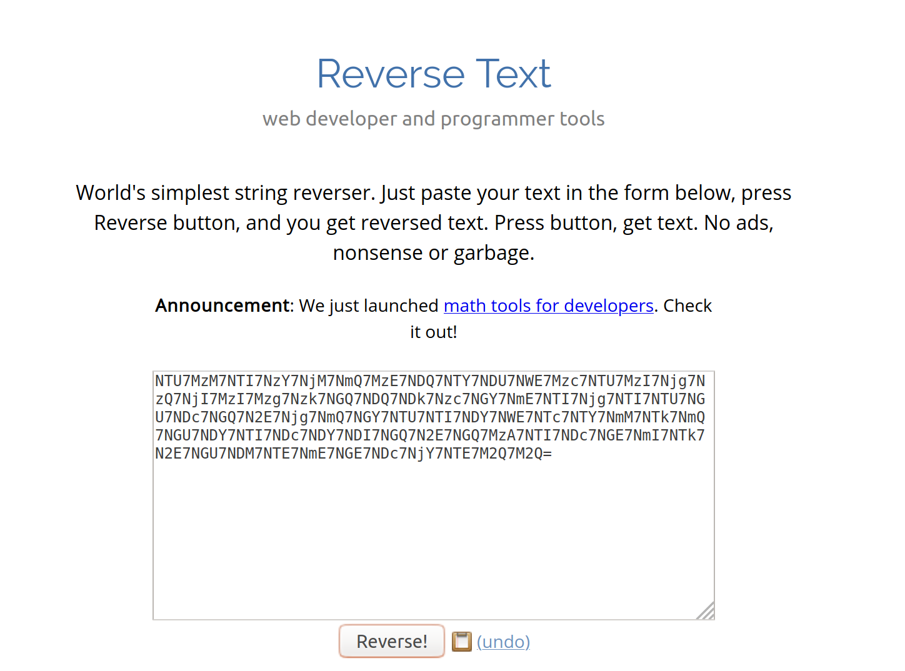
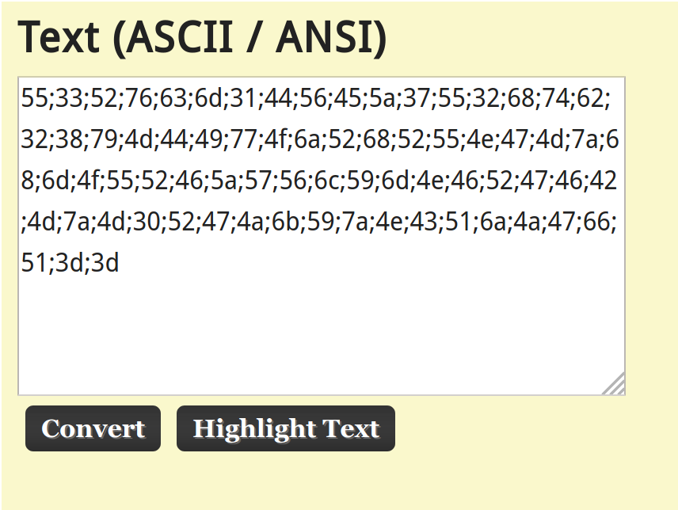
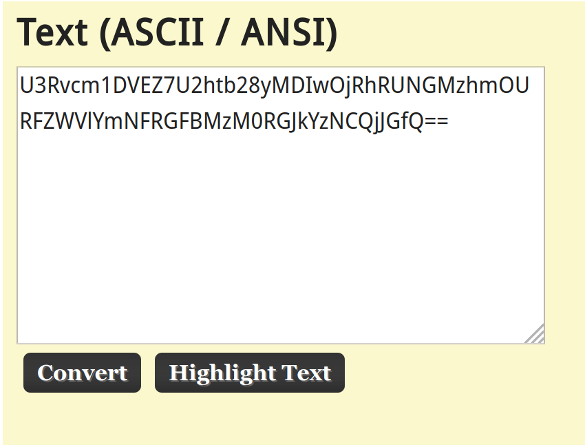
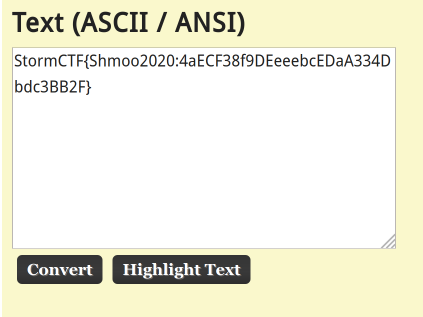

Unfortunately I didn't win the raffle, but I still thought the challenge was pretty interesting and they said it was ok to make a write up of it (although as I'm writing it I feel like I'm rubbing salt on the wound).
The challenge page was basically just some text and their logo, so I downloaded the image for further investigation.
This reminded me of some previous CTF challenges where messages can be hidden in the strings of an image file. I used the "strings" Linux command to search for a few different keywords; "http" was the winner.
The pastebin link leads to a ciphertext dump. For the decryption portion, I used my favorite Ascii to Hex website (linked here) to solve this challenge.
I suspected Base64 due to the mix of letters and numbers, so let's try pasting it in there first to see what we get.
The text now looks very hexadecimalish since the only letters in the text are between A and F. Let's try pasting this into the hexadecimal box on the page next.
This was the only place I felt unsure on this challenge because of the equal sign in the beginning. What type of encoding does that? Well...none of them do. However, if you swap all of the characters around to make it Base64, I wonder what would happen.
Since I'm a firm believer in working smart, not hard (within reason), I found this website which did the dirty work for me. Now let's paste that back into the Ascii to Hex website for Base64 and see what we get.
It's hexadecimal again! Time for more copy pasta.
Another Base64 encoding? Will the encoding ever end?
Huzzah! We found the flag! It's a shame I didn't win, but I applaud the creativity for this challenge. This is the most encoding I've ever seen in an image related CTF challenge. You have to admire their persistence.